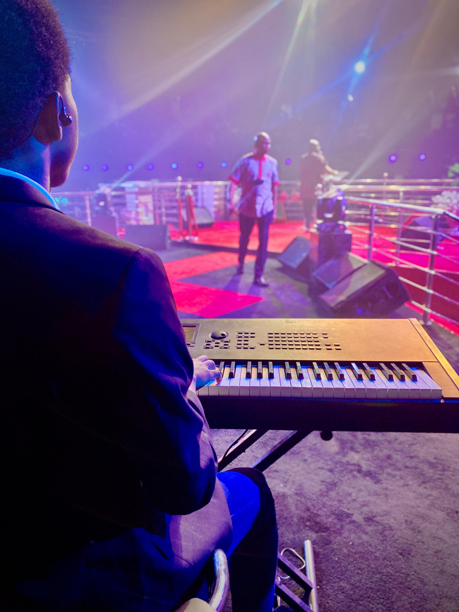

About Me
A short introduction to my studies and professional work.
Who I am
My name is David Oiwona Ejila. I am from Benue State. I am a final-year Computer Engineering student at Ahmadu Bello University, Zaria (registration number U21CO2032). I am interested in how computing systems are designed, documented and used to solve practical problems.
Alongside school I work as a music producer under the name MarvelPro. I have produced a number of records for different artistes. One of those records, Tiki Taka by Vacra, is certified Diamond by SNEP in France and has about 200 million streams across platforms.
Work outside class
I am a professional pianist and keyboardist with over a decade of playing experience. I served as a keyboard player in Koinonia Global from 2019 to 2022. I also play keys for Minister Kaestrings.

I invest in stocks and real estate. I also love to travel and go on vacations.
Direction
I want to complete my degree with a solid understanding of computer systems and keep doing work that is useful, documented and finished properly.